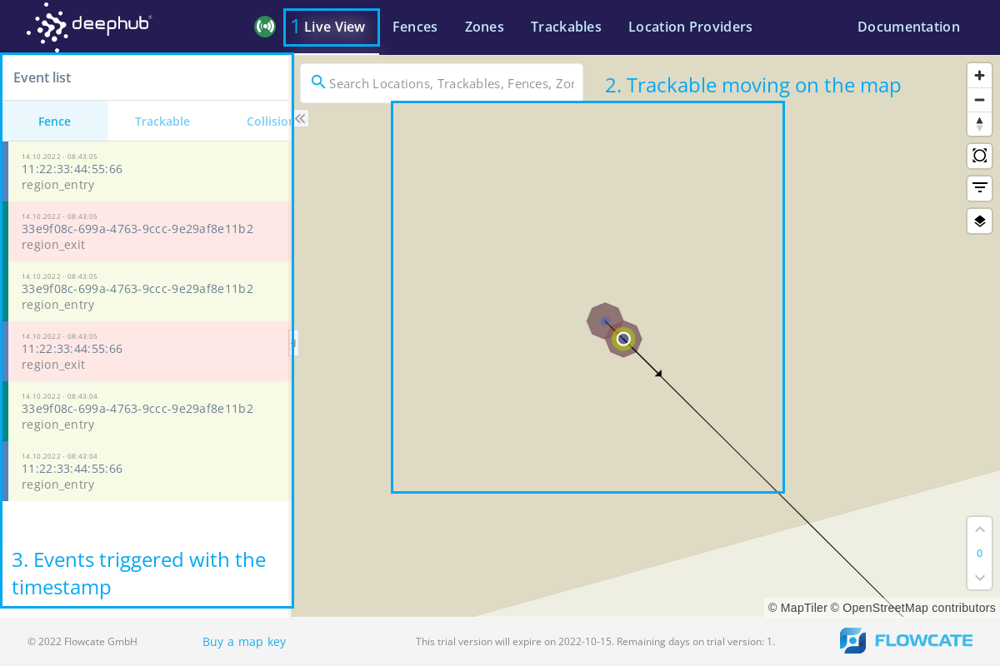
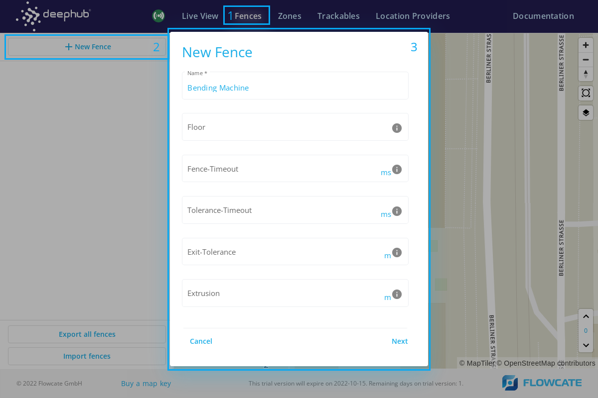
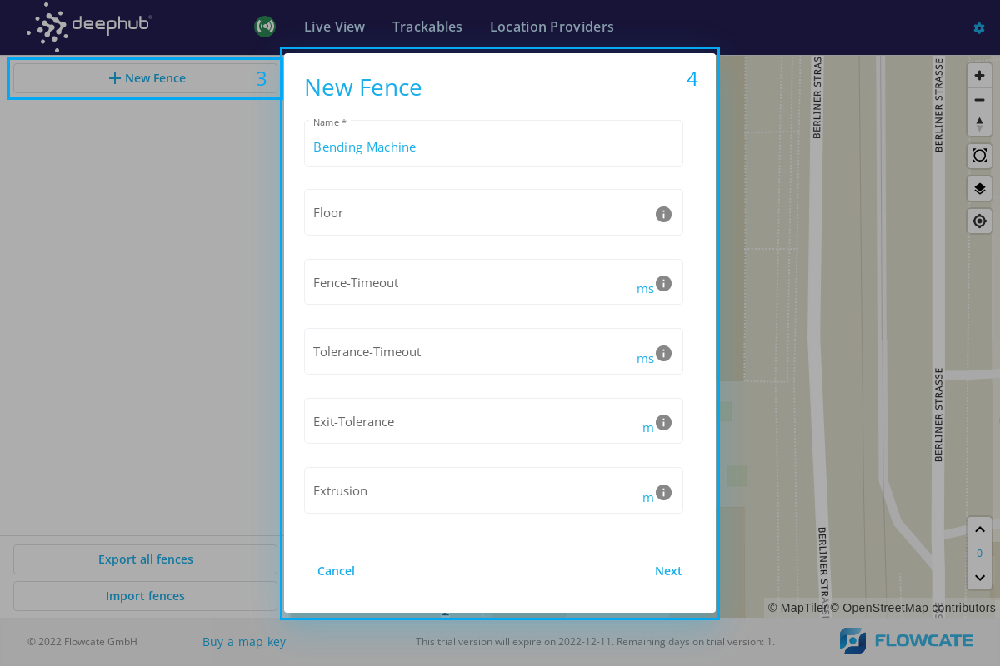
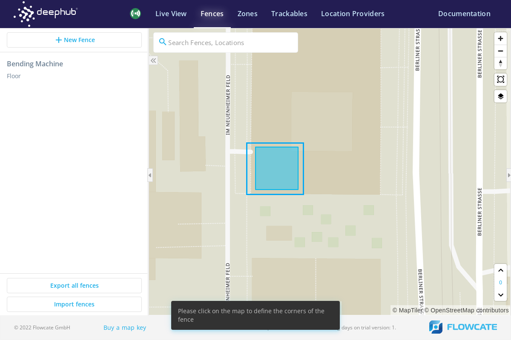
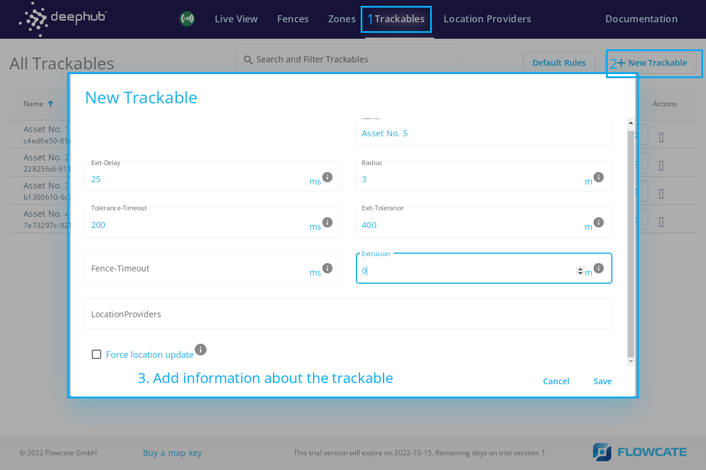
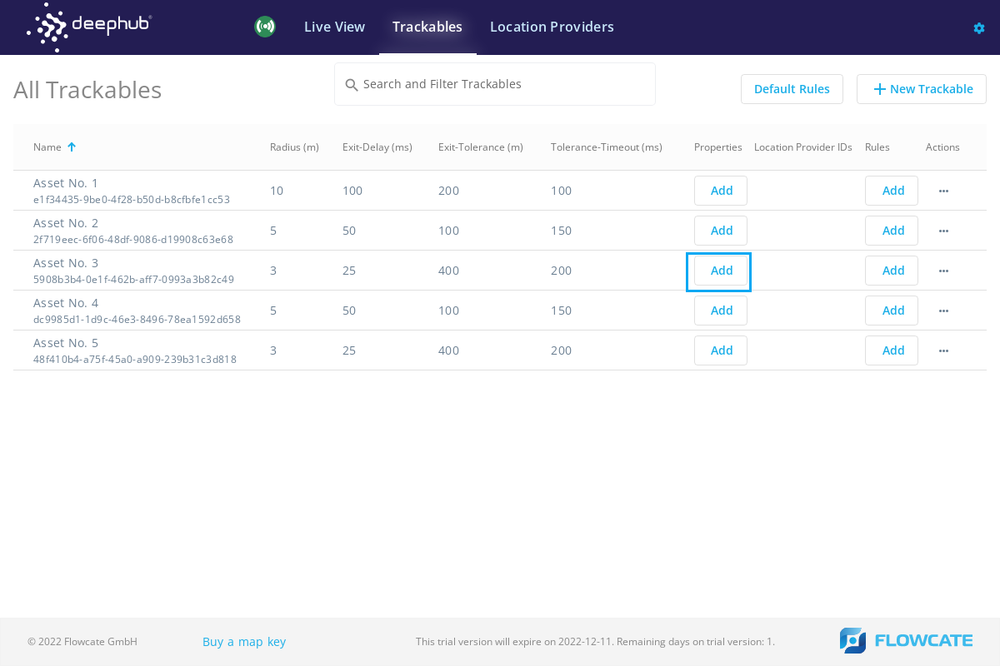
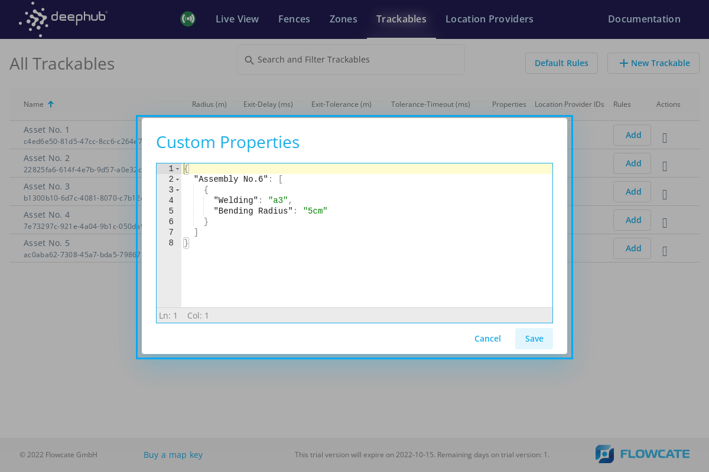
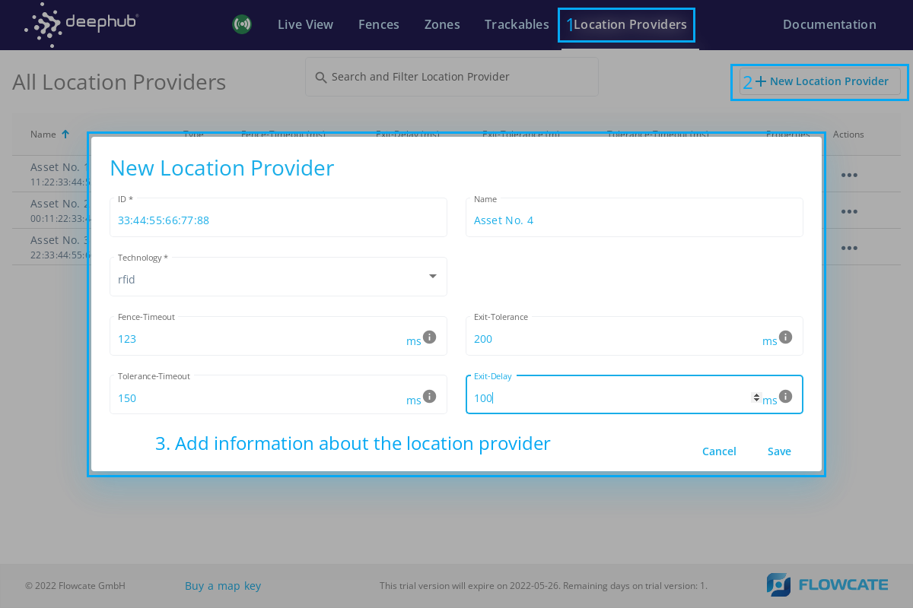
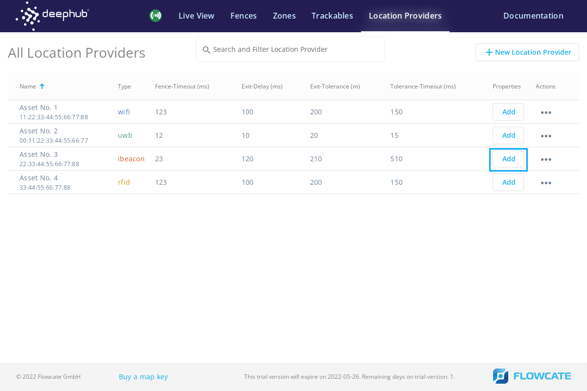
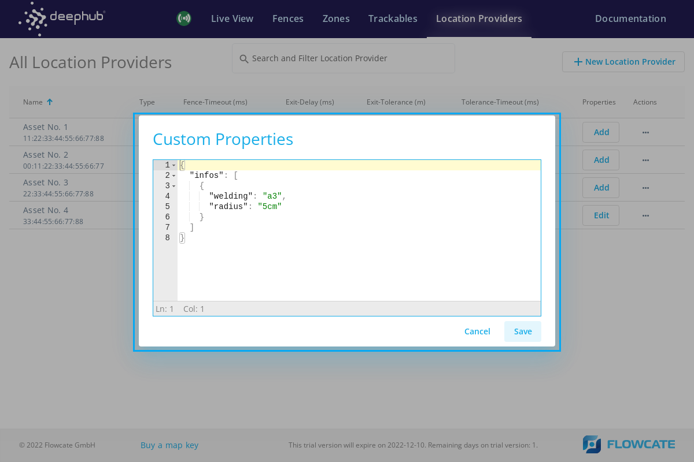

DeepHub® UI
Introduction
The DeepHub® UI is a web application that can run in every modern web browser, on any OS. It fulfills several tasks:
Provides an overview of the current status of the overall system
Allows for easy configuration of zones, location providers, trackables and fences
Visualizes a live view of tracked objects and their movement
In addition to these functional features, the UI represents a kind of showcase: the DeepHub UI only uses the documented REST and WebSocket APIs of the DeepHub locating middleware. Therefore, any partner or customer could build their own UI, tailored to their unique needs and requirements. Our UI is simply one possible implementation of a solution.
Note
The DeepHub UI visualizes the entities of the whole system on top of a web map. The latter is delivered online by a mapping service provider. We recommend using Maptiler as our preferred provider, and therefore use their maps by default. If you intend to use the DeepHub UI in a production environment, you will need to order your own Maptiler license key: Maptiler Cloud.
Overview
The user interface consists of five system components:
Live View - logs information of triggered events when trackables propagate through fences. Event information in the log consists of the fence name through which a trackable is moving, along with entry and exit timestamps.
Zone Setup - used to define the localization zones on the map for multiple positioning technologies (ex. WiFi, UWB, RFID, etc.). The individual responsible for installing and implementing the localization infrastructure would set up the zones based on localization techniques. Zones need to be set up once for each site.
Fence Management - allows users to locate numerous fences in one or multiple localization zones. Trackables entering and exiting fences would trigger an event. Different fences could be associated with different localization zones. The system operator and moderator would be responsible for creating and monitoring fences.
Trackables - allows users to assign trackables to the asset being tracked and attach the associated positioning providers. Trackable parameters such as it’s radius, exit delay, and collision tolerance can be defined as per requirements. Additionally, custom properties such as information about the asset can be assigned in this section.
Location Providers - allows users to create location providers for different positioning technologies (ex. GPS, WiFi, UWB, etc.). Parameters such as the fence timeout, exit delay, and collision tolerance can be defined as per requirements. Additionally, custom properties for the location provider can be assigned in this section.
Live View
Live View fetches the event triggers when a trackable is detected in a zone or fence. An event is triggered when a trackable enters a fence, as well as when a trackable exits a fence. Additionally, a timestamp is displayed in the left side pane within the user interface.
When a trackable enters a fence, the fence is highlighted in green. Similarly, when a trackable leaves a fence, it is highlighted in red.
Fences
To create a fence, click on “New Fence” from the option in the menu. This will launch a new pop-up window prompting for a name of the fence and the floor.
Name the fence and specify the floor level. Click “Next” in the pop-up window.
Select points on the map to create a polygon-shaped fence. For example, select 4 points on the map to create a rectangular fence.
Additionally, custom properties can be assign to fences, such as the name of the operation or the name of the material being stored in a fence.
A new fence will appear on the map.
Zones

Once a user is logged into the DeepHub®, the following user interface would appear with “Zone Setup”. Input the address of the desired site in the search bar. For example, “Emmendinger Straße 21, Teningen”.
To create a new localization zone, click on “New Zone” and a new pop-up window will be launched to specify characteristics of the zone.

Fill in the name of the zone and the floor level on which the zone is supposed to be created.
Select the desired technology from the dropdown menu.
Select a method of creating a zone from the dropdown list and click on “Next”. There are 4 methods to create a zone.

Extent based geometries (width/height)
Enter the height and width of the zone rectangle in meters. It is also possible to enter the approximate address where the zone is supposed to be created. Click on “Next” and the zone will appear on the user interface or at the approximate location which was pre-specified.

Adjust the zone orientation by moving and rotating the zone on the interface and click on “Save” to locate the zone on the user interface.

Local Position Input (Four-sided Polygon)
Enter the coordinates for each corner of a rectangular zone in meters. It is also possible to enter the approximate address where the zone is supposed to be created. Click on “Next” and the zone will appear on the user interface or at the approximate location which was pre-specified.

Adjust the zone orientation by moving and rotating the zone on the interface and click on “Save” to locate the zone on the user interface.
GPS Position Input (Four-sided Polygon)
Enter the geographic coordinates for each corner of a rectangular zone in the form of longitude and latitude. Click on “Next” and the zone with prescribed dimensions will appear on the user interface.

Adjust the zone orientation by moving and rotating the zone on the interface and click on “Save” to locate the zone on the user interface.
Drawing on map
Left click on the map to draw a polygonal zone in any shape. For example: Click 4 points to draw a rectangular zone. On the right side of the user interface, the local position for each point of the newly introduced zone can be modified. Click on the “Save” button to integrate the new zone into the map.

The newly created zone will appear on the map. On the left side pane, the list of created zones will appear.

Trackables
To create a new trackable in the DeepHub® frontend, click on “New Trackables” and a new window will launch prompting for the trackable information.
Please fill in the information as required and click “Save” to create a trackable.
Once a trackable has been created, it is possible to add custom properties to it.
 Location Providers
To create a new location provider in the DeepHub® frontend, click on “New Location Provider” and a new window will launch prompting for the location provider information.
Please fill in the information as required and click “Save” to create a location provider.
Once a location provider has been created, it is possible to add custom properties to it.
 